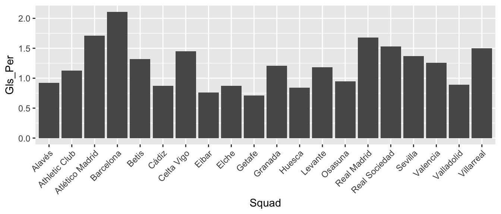
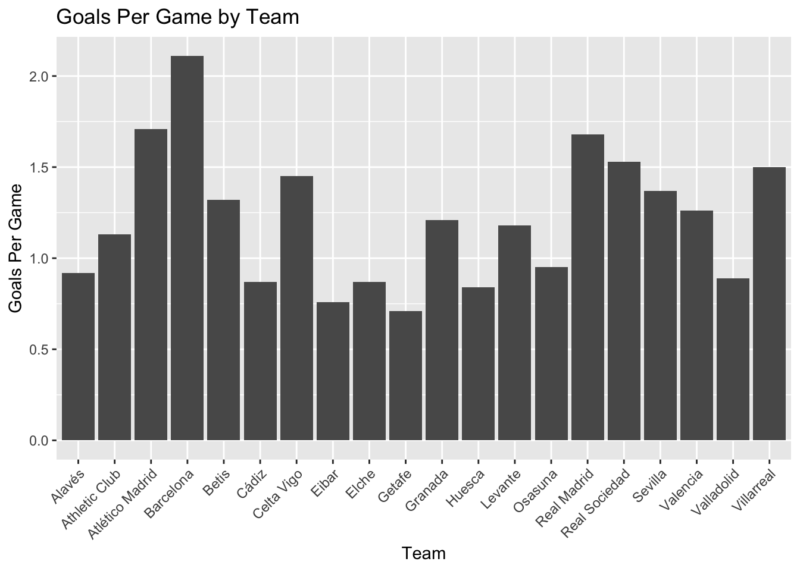
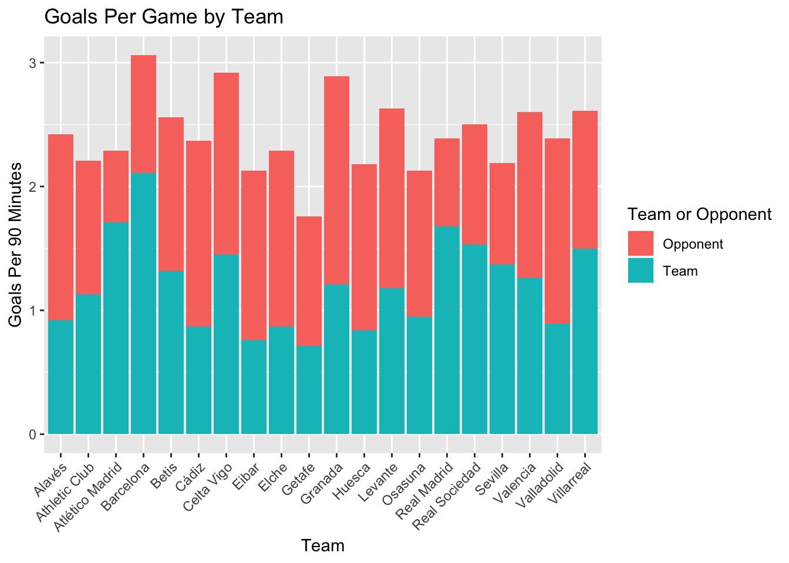

- About
- 1 Exploratory Data Analysis
- 2 Probability
- Chapter Preview
- 2.1 Definitions
- 2.2 Set Theory
- 2.3 Axioms, Properties, and Laws
- 2.4 Combinatorics
- 2.5 Odds and Gambling
- 2.6 Random Variables
- 2.7 Common Random Variables
- 2.8 Extra Stuff
- 2.8.1 Sets and Conditional Probability
- 2.8.2 Binomials and Multinomials
- 2.8.3 Expectation - Baseball
- 2.8.4 Basketball Scenario
- 2.8.5 Multiple Probability Distributions - Basketball
- 2.8.6 Law of Total Probability - Baseball
- 2.8.7 Multinomial Distribution - Baseball
- 2.8.8 Bayes - injured baseball player
- 3 Monte Carlo Simulation
- 4 Statistical Inference
- 5 Correlation
- 6 Linear Regression
- References
1.9 Soccer
Rules of Soccer YouTube video: https://www.youtube.com/watch?v=dFLaabgXhpc
1.9.1 Basic Soccer Statistics
Shots (SH) represent all shots taken by a team throughout the game. This is simply an attempt by a player to shoot the ball toward the net, even if they miss or the shot is saved (Rookie Road).
Shots on Goal (SOG) represent all shots that would have gone into the goal if not saved by a defender or goalkeeper (Rookie Road).
Assist (A) occur when a player passes the ball to someone, and the next shot results in a goal.
Possession refers to the percentage of time a team had control of the ball during a game.
1.9.2 Advanced Soccer Statistics
- Expected Goals (xG) “indicates how many goals a team could have expected to score based on the quantity and quality of chances that they created in a match” (Tippett 2019, 4).
These definitions come from www.rookieroad.com and “The Expected Goals Philosophy” by James Tippett.
To learn more about expected goals, check out this YouTube video.
1.9.3 Bar Plot
Now that we have an understanding of some basic shooting statistics, let us go through some EDA examples. For this first example, we will need to install the “worldfootballR” package.
library(worldfootballR)Next we will look at some data specific to LaLiga, which is a soccer league in the men’s top professional soccer division.
# Get "Squad Standard Stats" Data
big5_2021_stats <- fb_big5_advanced_season_stats(season_end_year = 2021, stat_type = "standard", team_or_player = "team")
liga_2021_stats <- big5_2021_stats[which((big5_2021_stats$Comp == "La Liga")),]
# look at the first ten entries and a selection of columns
liga_2021_stats %>% select(Squad,Team_or_Opponent,Poss,Gls,Ast,xG_Expected,xA_Expected) %>% slice_head(n=10) %>% kt()# Create visual for each team's goals per game
team_goals_viz <- ggplot(data = liga_2021_stats[which(liga_2021_stats$Team_or_Opponent == "team"),],
aes(x = Squad, y = Gls_Per)) +
geom_bar(stat = "identity")
team_goals_viz
This plot is a good starting point, but still looks pretty messy. Let’s add a title, change the axis titles, and rotate the axis labels so they are not overlapping over one another.
team_goals_viz <- team_goals_viz +
xlab("Team") +
ylab("Goals Per Game") +
theme(axis.text.x = element_text(angle = 45, hjust = 1)) +
ggtitle("Goals Per Game by Team")
team_goals_viz
This is already looking a lot better. Now, we will add the goals scored per game against each team. Why is this of interest? Well, at first glance, Barcelona seems like a pretty impressive team, as they score more goals per game than any other team in the league. However, what if they also have more goals scored against them than any other team in the league? This could be important context, so we will include it in the graph below.
all_goals_viz <- ggplot(data = liga_2021_stats, aes(x = Squad, y = Gls_Per)) +
geom_bar(stat = "identity", aes(fill = Team_or_Opponent), position = "stack") +
xlab("Team") +
ylab("Goals Per 90 Minutes") +
theme(axis.text.x = element_text(angle = 45, hjust = 1)) +
ggtitle("Goals Per Game by Team")
all_goals_viz
This is looking pretty good, but let’s clean it up just a bit by changing the legend title and labels.
all_goals_viz +
scale_fill_discrete(name = "Team or Opponent", labels = c("Opponent","Team"))What does this graph show us? Well, we are able to see the average number of goals scored for and against each team per game. It looks like Barcelona is scoring a lot more goals than they are letting be scored against them, while other teams like Valladolid tend to have a higher proportion of goals scored for the opposing team.
1.9.4 Scatter Plot
In addition to simply knowing the average actual number of goals scored for and against each team per game, we may be interested in how this compares to the expected number of goals scored per game, as well.
library(ggExtra)
act_exp_viz <- ggplot(data = liga_2021_stats, aes(x = xG_Per, y = Gls_Per, label = Squad)) +
geom_point() +
scale_x_continuous(limits = c(0.75,2.25)) +
scale_y_continuous(limits = c(0.75,2.25)) +
ggtitle("Expected vs. Actual Goals Per Game") +
xlab("Expected Goals Per Game") +
ylab("Actual Goals Per Game") +
geom_smooth(method = "lm", se = FALSE) +
theme(aspect.ratio = 2/2)
ggMarginal(act_exp_viz, type = "density")
As you can see, we fit a line to the data. At first glance, it seems to have a positive slope slightly greater than 1. What does this mean in the scenario of actual and expected goals per game?